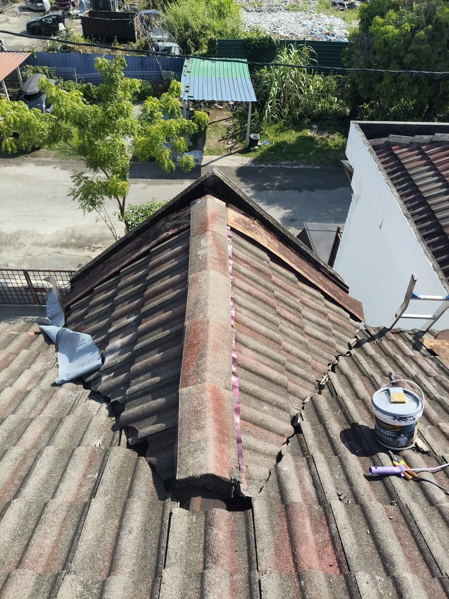

Perlukan plumber atau tukang bumbung di Shah Alam & Klang?
Perkhidmatan plumber dan tukang bumbung di Shah Alam, Taman Sri Muda, Klang dan kawasan sekitar. Kami pernah menjalankan kerja baik pulih perabung bumbung di kedua-dua kawasan ini. Gambar kerja sebenar ada di bawah.
Kerja sebenar di Shah Alam & Klang
Baik pulih perabung bumbung di Taman Sri Muda, Shah Alam dan di Klang. Kami membuka genting perabung, membersihkan sisa simen lama, memasang lapisan pelindung di sepanjang sambungan, kemudian memasang semula genting perabung.




Lebih banyak catatan kerja di halaman Perjalanan Kerja Harian.
Cara hantar pertanyaan di WhatsApp
Hantar 3 maklumat ini supaya kami boleh bantu dengan lebih cepat:
- LokasiNama taman atau kawasan anda.
- Jenis masalahContoh: paip bocor, sinki tersumbat, tandas, tangki air, bumbung bocor.
- Gambar atau videoAmbil gambar atau video masalah dari dekat.
Harga dibincangkan dan disahkan melalui WhatsApp sebelum kerja dimulakan.
Servis plumber Shah Alam & Klang & tukang bumbung
Pemeriksaan dan pembaikan paip air bocor di rumah, bilik air, dapur dan kawasan bawah bumbung.
Kerja membaiki saluran sinki tersumbat dan tandas tersumbat.
Membuka tangki air lama dan memasang tangki air baharu mengikut keperluan.
Pembaikan bumbung bocor, baik pulih perabung dan pemasangan flashing di sambungan bumbung dengan dinding.
Kerja waterproofing slab konkrit untuk membantu mengatasi masalah kebocoran air.
Kerja waterproofing lantai bilik air menggunakan sistem Sika TopSeal 107 mengikut keadaan tapak.
Kerja membuka jubin lama dan memasang jubin baharu untuk lantai bilik air dan kawasan berkaitan.
Kawasan servis
Kami menerima pertanyaan kerja plumber dan tukang bumbung di kawasan berikut:
- Shah Alam
- Taman Sri Muda
- Klang
- Kawasan sekitar Shah Alam & Klang
Soalan lazim
Bumbung bocor di bahagian atas (perabung), boleh dibaiki?
Boleh. Kerja biasanya melibatkan membuka genting perabung, membersihkan simen lama, memasang lapisan pelindung dan memasang semula genting perabung.
Bagaimana nak dapatkan sebut harga?
Hantar WhatsApp ke 011-2129 0194 dengan nama taman, jenis masalah dan gambar atau video. Harga dibincang dan disahkan sebelum kerja dimulakan.
Kenapa perlu hantar gambar atau video dahulu?
Gambar atau video membantu kami faham masalah dahulu. Selepas semak, kami beritahu jika perlu datang melihat kerja sebelum buat keputusan.
Hubungi Plumber Shah Alam & Klang
Ada masalah paip bocor, sinki tersumbat, bumbung bocor atau memerlukan waterproofing? WhatsApp 011-2129 0194 untuk berbincang tentang lokasi, jenis kerosakan dan anggaran kos kerja.